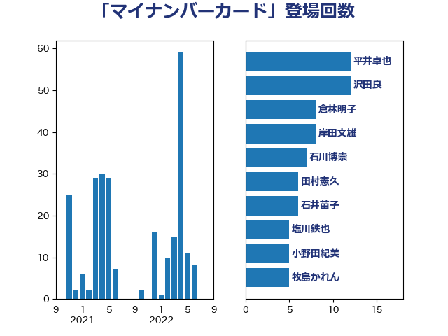

単語「マイナンバーカード」

| 平井卓也 | 自由民主党 | 12 回 |
| 沢田良 | 日本維新の会 | 12 回 |
| 倉林明子 | 日本共産党 | 8 回 |
| 岸田文雄 | 自由民主党 | 8 回 |
| 石川博崇 | 公明党 | 7 回 |
| 田村憲久 | 自由民主党 | 6 回 |
| 石井苗子 | 日本維新の会 | 6 回 |
| 塩川鉄也 | 日本共産党 | 5 回 |
| 小野田紀美 | 自由民主党 | 5 回 |
| 牧島かれん | 自由民主党 | 5 回 |
| 金子恭之 | 自由民主党 | 5 回 |
| 山田太郎 | 自由民主党 | 4 回 |
| 東徹 | 日本維新の会 | 4 回 |
| 熊田裕通 | 自由民主党 | 4 回 |
| 福島みずほ | 社会民主党 | 4 回 |
| 高木かおり | 日本維新の会 | 4 回 |
| 伊藤岳 | 日本共産党 | 3 回 |
| 小林史明 | 自由民主党 | 3 回 |
| 小沢雅仁 | 立憲民主党 | 3 回 |
| 岡本あき子 | 立憲民主党 | 3 回 |
| 後藤祐一 | 立憲民主党 | 3 回 |
| 本村伸子 | 日本共産党 | 3 回 |
| 杉尾秀哉 | 立憲民主党 | 3 回 |
| 田村智子 | 日本共産党 | 3 回 |
| 竹内譲 | 公明党 | 3 回 |
| 菅義偉 | 自由民主党 | 3 回 |
| 足立康史 | 日本維新の会 | 3 回 |
| 井坂信彦 | 立憲民主党 | 2 回 |
| 川田龍平 | 立憲民主党 | 2 回 |
| 後藤茂之 | 自由民主党 | 2 回 |
| 森山浩行 | 立憲民主党 | 2 回 |
| 浜田聡 | NHK党 | 2 回 |
| 牧原秀樹 | 自由民主党 | 2 回 |
| 田村まみ | 国民民主党 | 2 回 |
| 若松謙維 | 公明党 | 2 回 |
| 阿部司 | 日本維新の会 | 2 回 |
| 音喜多駿 | 日本維新の会 | 2 回 |
| 高野光二郎 | 自由民主党 | 2 回 |
| 中川宏昌 | 公明党 | 1 回 |
| 中曽根康隆 | 自由民主党 | 1 回 |
| 中谷一馬 | 立憲民主党 | 1 回 |
| 仁木博文 | 無所属 | 1 回 |
| 吉田久美子 | 公明党 | 1 回 |
| 和田政宗 | 自由民主党 | 1 回 |
| 堀井巌 | 自由民主党 | 1 回 |
| 堀場幸子 | 日本維新の会 | 1 回 |
| 塩村あやか | 立憲民主党 | 1 回 |
| 大家敏志 | 自由民主党 | 1 回 |
| 宮本徹 | 日本共産党 | 1 回 |
| 小林鷹之 | 自由民主党 | 1 回 |
| 山本博司 | 公明党 | 1 回 |
| 山本順三 | 自由民主党 | 1 回 |
| 岸真紀子 | 立憲民主党 | 1 回 |
| 島村大 | 自由民主党 | 1 回 |
| 平木大作 | 公明党 | 1 回 |
| 平林晃 | 公明党 | 1 回 |
| 打越さく良 | 立憲民主党 | 1 回 |
| 松本尚 | 自由民主党 | 1 回 |
| 林芳正 | 自由民主党 | 1 回 |
| 森屋隆 | 立憲民主党 | 1 回 |
| 橋本聖子 | 無所属 | 1 回 |
| 武田良太 | 自由民主党 | 1 回 |
| 武見敬三 | 自由民主党 | 1 回 |
| 江田憲司 | 立憲民主党 | 1 回 |
| 河西宏一 | 公明党 | 1 回 |
| 浦野靖人 | 日本維新の会 | 1 回 |
| 清水貴之 | 日本維新の会 | 1 回 |
| 玉木雄一郎 | 国民民主党 | 1 回 |
| 田中健 | 国民民主党 | 1 回 |
| 田畑裕明 | 自由民主党 | 1 回 |
| 石井啓一 | 公明党 | 1 回 |
| 石垣のりこ | 立憲民主党 | 1 回 |
| 蓮舫 | 立憲民主党 | 1 回 |
| 藤原崇 | 自由民主党 | 1 回 |
| 鈴木淳司 | 自由民主党 | 1 回 |
| 高市早苗 | 自由民主党 | 1 回 |